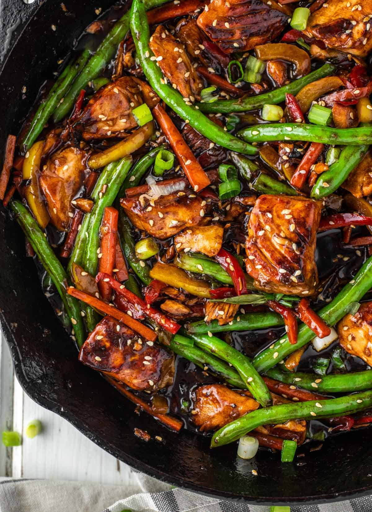

Salmon Stir-Fry

For fish lovers
This is a quick-to-prepare, low-cholesterol dish. The vegetables stay nice and crisp. Serve with
brown rice or quinoa for a healthy lunch or dinner.
Ingredients
- 16oz salmon
- 5 cups of sliced vegetables-mushrooms, celery, pepper, carrots
- 1 clove garlic
- 1tbs oil
- water
- 1tbs cornstarch
- cooked brown rice
Steps
- Drain salmon (reserve liquid)
- Break salmon into chunks
- Stir fry vegetables and garlic in hot oil (1min)
- Add water to reserved salmon liquid and cornstarch and blend
- Stir mixture into vegetable and cook until slightly thickened
- Gently stir in salmon